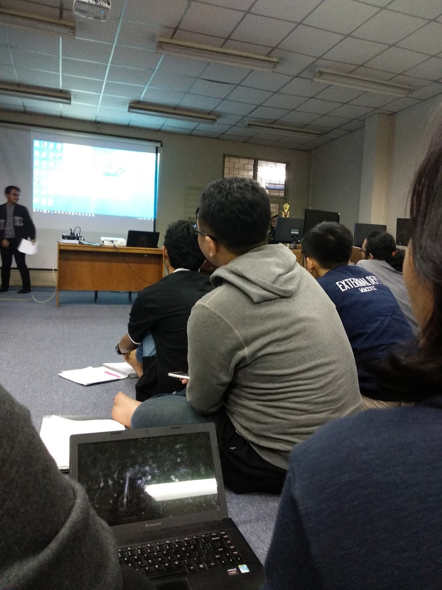

Mahasiswa D3 Informatika Gelar Lokakarya Web Dasar
Penulis :Tim Akademik D3 Teknik Informatika
Waktu publikasi :
Lokasi: Laboratorium Komputer 2
Ringkasan: Lokakarya membantu mahasiswa memahami struktur HTML, CSS dasar, dan pengujian halaman melalui browser.

Latar Belakang
Kegiatan diselenggarakan untuk memperkuat fondasi sebelum mahasiswa mempelajari framework dan pengembangan aplikasi yang lebih kompleks.
Rangkaian Kegiatan
Peserta menyusun halaman profil, memperbaiki kesalahan HTML, menerapkan CSS, dan mempresentasikan hasil melalui code defense singkat.